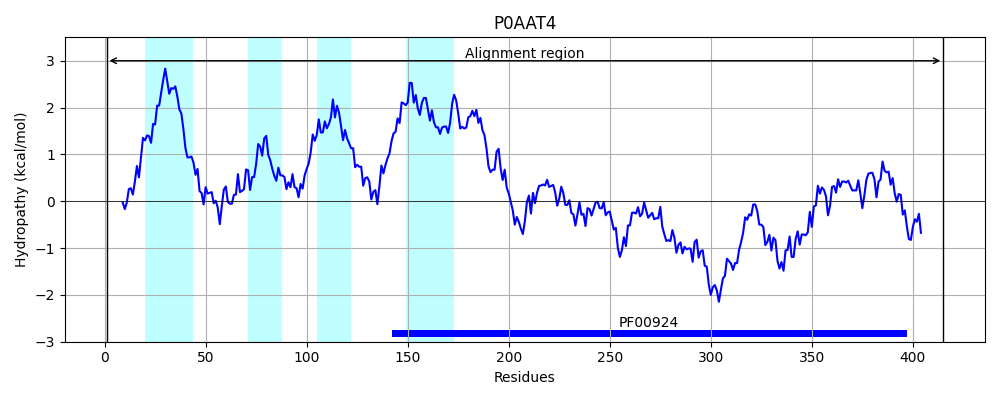
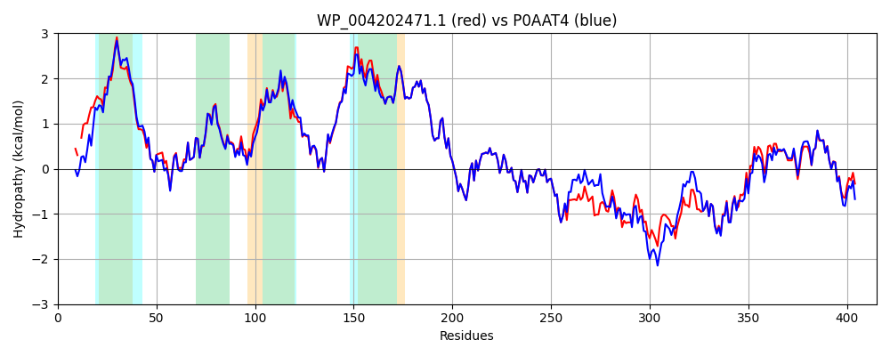

Hit Accession: P0AAT4
Hit TCID: 1.A.23.4.5
Hit Description: gnl|BL_ORD_ID|8685 gnl|TC-DB|P0AAT4|1.A.23.4.5 Miniconductance mechanosensitive channel OS=Escherichia coli (strain K12) GN=mscM PE=1 SV=1
Mach Len: 415
e:0.000000
Query TMS Count : 4
Hit TMS Count: 4
TMS-Overlap Score: 3.650000
Predicted Substrates:CHEBI:24870;ion, CHEBI:25367;molecule
BLAST Alignment:
Score: 1768 , Bit scores: 685 bits, E-value: 0.0e+00, Alignment length: 415, Percentage identity: 83
Query: 1 MQELISQIAAL-GIEITPTRSLMIIFGIILFTAVVVHLILHKVVLRAFEKRALASSHLWLQIITQNKLFHRLAFTLQGIIVNVQAVLWLQKGSEAAEILTTVAQLWVMIYAMLSFFSLLDVILKLAQKFPAASQLPLKGIFQGIKLVTAIIIGILIISLLIGQSPAILISGLGAMAAVLMLVFKDPILGLVAGIQLSANDMLKLGDWLEMPKYGADGAVIDIGLTTVKVRNWDNTITTIPTWSLVSDSFKNWSGMSASGGRRIKRSLNIDTTSIHFLDEQEQQRLIRAKLLKPYMDSRHEEISAWNQQYAGEQSVLNERRMTNVGTFRAYLQEYLRHHPRIRQDMTLMVRQLAPDANGLPIEIYCFTNTVVWAEYEGIQADIFDHVFAVVEEFGLRIHQTPTGNDIRALAGAFSR 414
MQ+LISQ+ L GIEI T S+++IFGII TAVVVH+ILH VVLR FEKRA+ASS LWLQIITQNKLFHRLAFTLQGIIVN+QAV WLQKG+EAA+ILTT AQLW+M+YA+LS FSLLDVIL LAQKFPAASQLPLKGIFQGIKL+ AI++GIL+ISLLIGQSPAILISGLGAMAAVLMLVFKDPILGLVAGIQLSANDMLKLGDWLEMPKYGADGAVIDIGLTTVKVRNWDNTITTIPTWSLVSDSFKNWSGMSASGGRRIKRS++ID TSI FLDE E QRL +A LLKPY+ SRH+EI+ WN+Q +SVLN RRMTN+GTFRAYL EYLR+HPRIR+DMTLMVRQLAP NGLP+EIY FTNTVVW EYE IQADIFDH+FA+VEEFGLR+HQ+PTGNDIR+LAGAF +
Sbjct: 1 MQDLISQVEDLAGIEIDHTTSMVMIFGIIFLTAVVVHIILHWVVLRTFEKRAIASSRLWLQIITQNKLFHRLAFTLQGIIVNIQAVFWLQKGTEAADILTTCAQLWIMMYALLSVFSLLDVILNLAQKFPAASQLPLKGIFQGIKLIGAILVGILMISLLIGQSPAILISGLGAMAAVLMLVFKDPILGLVAGIQLSANDMLKLGDWLEMPKYGADGAVIDIGLTTVKVRNWDNTITTIPTWSLVSDSFKNWSGMSASGGRRIKRSISIDVTSIRFLDEDEMQRLNKAHLLKPYLTSRHQEINEWNRQQGSTESVLNLRRMTNIGTFRAYLNEYLRNHPRIRKDMTLMVRQLAPGDNGLPLEIYAFTNTVVWLEYESIQADIFDHIFAIVEEFGLRLHQSPTGNDIRSLAGAFKQ 415 | Protein Hydropathy Plots: |
|---|
 |  |
Pairwise Alignment-Hydropathy Plot:
|
|---|
|  |